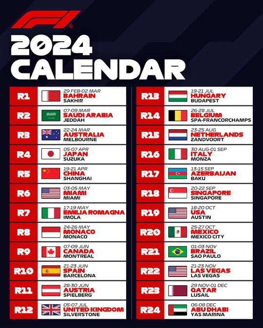

A F1 race weekend consists of three main events across three days. On Friday, the teams will go through two practice sessions. During the sessions, the drivers can drive around the track and work on their car. Saturday consists of one additional practice session and a qualifying race. This race involves drivers competing for lap times and will determine the starting order of the main event. Sunday is the day of the big race. Drivers will race around the track for a pre-determined amount of laps to determine the winner of the weekend. Four times a season, a sprint race will be added to the weekend. On Friday, there is one practice session and a sprint qualifying. The sprint race takes place Saturday and is 25% of the main race. Saturday night is regular qualifying and the main event being Sunday.
